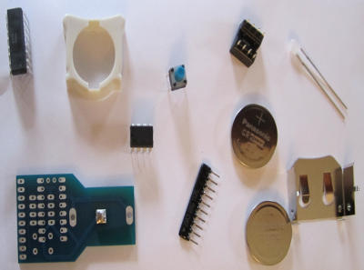
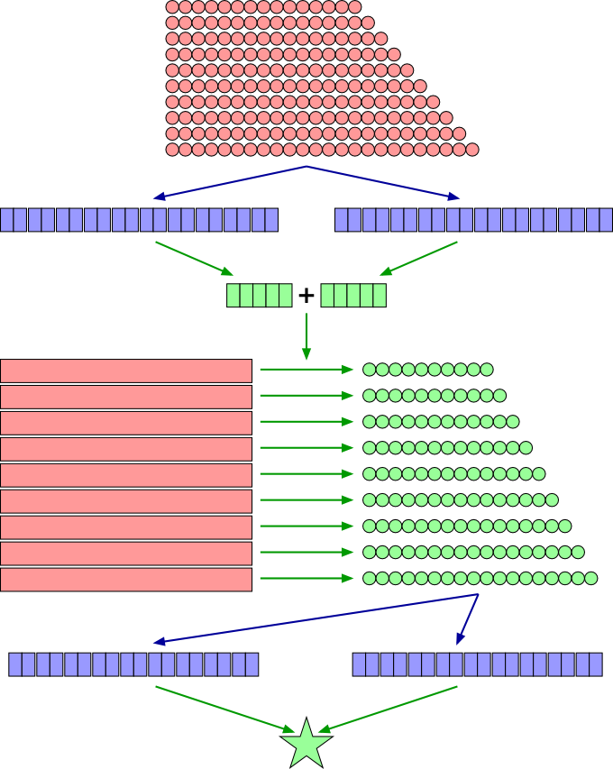

Ben Bitdiddle edits theater reviews written by his fleet of critic
bots, who are sent out for the tedious meatspace part of the
job. Contact HQ to obtain some components he recently posted on
reuse@mit.edu.

The following guidelines should help you assemble your components properly. If you don’t follow the guidelines, replacements are available, but we will be cranky.
